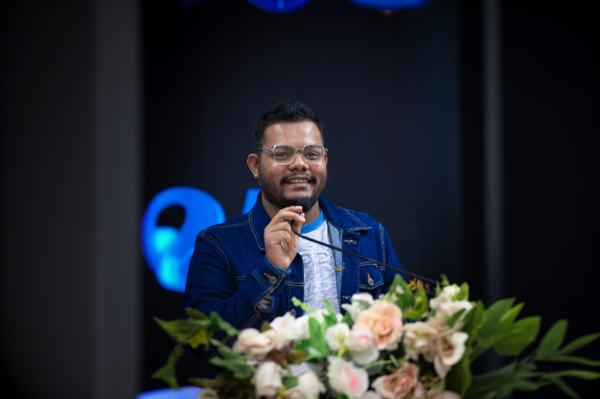
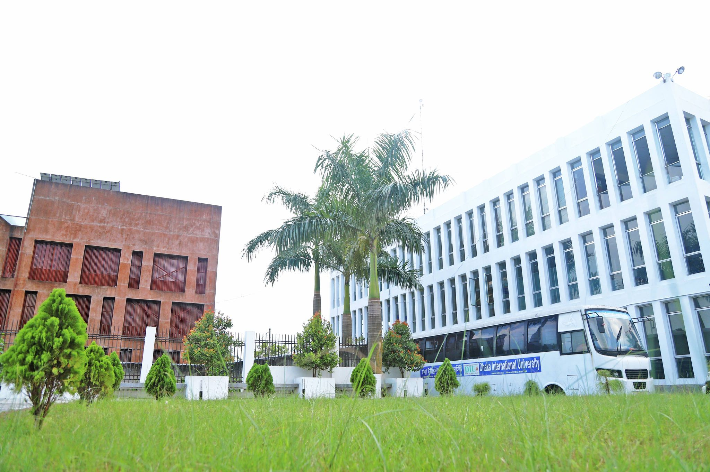

Intro
I'm Nazmus Sakib Shohan, a dedicated B.Sc. student in Computer Science and Engineering (CSE) at Dhaka International University. Alongside my academic journey, I proudly serve as the General Secretary of the DIU Film & Photography Club, where I lead creative projects and foster a thriving community of visual storytellers.
My studies have equipped me with a strong foundation in technology and innovation, and I am eager to apply these skills to real-world challenges. I am particularly passionate about areas such as software development, artificial intelligence, and creative digital solutions, aiming to merge technical expertise with artistic expression.
Through my academic and extracurricular experiences, I have developed skills in programming, event management, photography, and I strive to make a meaningful impact in both technology and the arts.
Work & Skills

Professional Experience
Academic Counselor, Science Point Academic Care | Dhaka, Bangladesh | September 2020 - August 2021
- Supervised more than 250 high-achieving high-school students through completion of high school courses, especially with science courses.
- Advised students on appropriate study plans for their board exams and discussed personal problems in specific fields.
- Facilitated successful construction of a coaching center in my arena.
General Secretary, DIU Film and Photography Club | Dhaka, Bangladesh | September 2024 - Present
- Managing platforms to promote storytelling and maintain vibrant audience interaction.
- Capable of organizing events and collaborating with team members to achieve shared objectives.
- Demonstrated proficiency in content writing and coordinating events, ensuring successful execution.
Skills and Interests
Languages: English (Fluent), Bangla (Native), Hindi (Fluent).
Computer Skills: Proficient in C, C++; Microsoft Office Suite, Microsoft Excel, and content writing; Familiar with Adobe Lightroom Classic.
Interests: Cricket, Photography, Cooking, Reading journals and books,Watching Movies & Webserise, Stand-up Comedy.
Leadership Experience
Student Council President, Bamoil Ideal High School | Dhaka, Bangladesh | January 2015 - February 2019
- Selected by direct election of 500+ students to represent the student council of the school.
- Helped students understand campus rules and represented their problems to the school authority to take necessary steps.
- Worked as a bridge between teachers and students to schedule class tests, track assignments, and other group activities.
Education

University: Dhaka International University
Location: Satarkul, Badda, Dhaka-1212, Bangladesh.
Degree: B.Sc in Computer Science and Engineering
Duration: August 2022 - Present
Contact